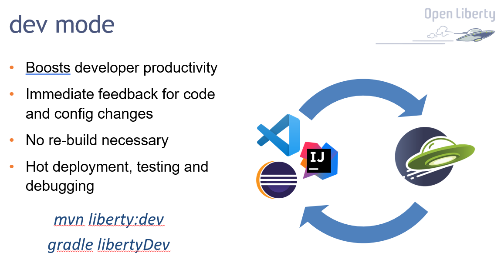
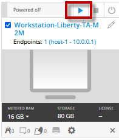

Modern Development experience with Liberty and Java applications
Lab: Getting Started with Liberty and Dev Mode
Objectives
In this exercise, you will learn how developers can use Liberty in “dev” mode for achieving efficient iterative develop, test, debug cycle when developing Java based applications / microservices.
At the end of this lab you should be able to:
-
Use Liberty dev mode (stand-alone) without an IDE
-
Experience hot reloading of application code and configuration changes using dev mode
-
Work with Liberty dev mode in containers
-
Run integrated unit/integration tests from Liberty dev mode
You will need an estimated 45 to 60 minutes to complete this lab.
Lab requirements
- Use the lab environment that we prepared for this lab. It already has the prerequisite software installed and configured.
Introduction - Liberty and "dev" Mode
Open Liberty is an application server designed for the cloud. It’s small, lightweight, and designed with modern cloud-native application development in mind.
Open Liberty supports the full MicroProfile and Jakarta EE APIs and is composable, meaning that you can use only the features that you need, keeping the server lightweight, which is great for microservices. It also deploys to every major cloud platform, including Docker, Kubernetes, and Cloud Foundry.
Maven is an automation build tool that provides an efficient way to develop Java applications. Using Maven, you will build a simple microservice, called system, that collects basic system properties from your laptop and displays them on an endpoint that you can access in your web browser.
Open Liberty development mode, or dev mode, allows you to develop applications with any text editor or IDE by providing hot reload and deployment, on demand testing, and debugger support. Open Liberty Dev Mode is enabled through Maven and Gradle projects.
Your code is automatically compiled and deployed to your running server, making it easy to iterate on your changes.
You can run tests on demand or even automatically so that you can get immediate feedback on your changes. You can also attach a debugger at any time to debug your running application.

The lab environment
One (1) Linux VM has been provided for this lab.

The “Liberty vPOT … Desktop” VM has the following software available:
-
Application Project with Liberty
-
Maven 3.6.0
- The login credentials for the Liberty vPOT … Desktop” VM are:
User ID: ibmdemo
Password: passw0rd (That is a numeric zero in passw0rd)
Login to the "Liberty vPOT … Desktop" VM and Get Started
-
If the VM is not already started, start it by clicking the Play button.

-
After the VM is started, click the “Liberty vPOT … Desktop” VM icon to access it.

-
Login with ibmdemo ID.
a. Click on the “ibmdemo” icon on the Ubuntu screen.

b. When prompted for the password for “ibmdemo” user, enter “passw0rd” as the password:
Password: passw0rd (lowercase with a zero instead of the o)

-
Resize the Skytap environment window for a larger viewing area while doing the lab.
From the Skytap menu bar, click on the “Fit to Size”
icon. This will enlarge the viewing area to fit the size of your browser window.
If, at aytime during the lab, you ar asked to install updates, click CANCEL!
 |
Important: Click CANCEL…. If, at any time during the lab, you get a pop-up asking to install updated software onto the Ubuntu VM. The one we experience is an update available for VS Code. CLICK CANCEL!
|

Getting Started with Liberty and Dev Mode
In this lab, you will learn how to run and update a simple REST microservice on an Open Liberty server using the developer mode (dev mode). You will use Maven throughout the guide to build and run the microservice as well as to interact with the running server instance.
Building and running the application using Maven and the liberty-maven-plugin
The sample application used in this lab is configured to be built with Maven. Every Maven-configured project contains a pom.xml file, which defines the project configuration, dependencies, plug-ins, and so on.
Your pom.xml file is located in the root directory of the project and is configured to include the liberty-maven-plugin, which allows you to install applications into Open Liberty and manage the server instances.
To begin, navigate to the project directory. Build the “system” microservice that is provided and deploy it to Open Liberty by running the Maven liberty:run goal:
-
Navigate to the project directory. Build the “system” microservice that is provided and deploy it to Open Liberty by running the Maven liberty:run goal:
a. Open a terminal window and change to the directory /home/ibmdemo/Student/labs/devmode/demo-project
cd /home/ibmdemo/Student/labs/devmode/demo-projectb. Run the mvn libert:run command to start the Liberty server
mvn liberty:runThe mvn command initiates a Maven build, during which the target directory is created to store all build-related files.
The liberty:run argument specifies the Open Liberty run goal,which starts an Open Liberty server instance in the foreground.
As part of this phase, an Open Liberty server runtime is downloaded and installed into the target/liberty/wlp directory, a server instance is created and configured in the target/liberty/wlp/usr/servers/defaultServer directory, and the application is installed into that server.
When the server begins starting up, various messages display in your command-line session. Wait for the following message, which indicates that the server startup is complete:
The server defaultServer is ready to run a smarter planet.
-
Access the “system” microservice that was deployed to the Liberty server.
a. Open the Firefox Web Browser from inside of the VM and go to the URL below. The microservice lists various system properties of your JVM.
http://localhost:9080/system/properties -
Stop the Liberty Server by pressing the CTRL+C in the command-line session where you ran the server.
-
Start and Stop the Liberty server in the background
Although you can start and stop the server in the foreground by using the Maven liberty:run goal, you can also start and stop the server in the background with the Maven liberty:start and liberty:stop goals:
mvn liberty:start mvn liberty:stop -
View the pom.xml file to see the liberty-maven-plugin that was > used by the previous steps.
a. From a Terminal window, navigate to the following directory
cd /home/ibmdemo/Student/labs/devmode/demo-projectb. View the relevant plugin in the pom.xml file. The -A and -B options on the grep command display the specified number of lines before and after the location of the search text string.
cat pom.xml | grep -B 4 -A 2 liberty-maven-plugin
|
Information: Tip: Additional information on the liberty-maven-plugin can be found here: |
Updating the application without restarting the server
The Open Liberty Maven plug-in includes a dev goal that listens for any changes in the project, including application source code or configuration changes. The Open Liberty server automatically reloads the application and configuration without restarting. This goal allows for quicker turnarounds and an improved developer experience.
-
Start the Liberty server in “dev” mode
a. From a Terminal window, navigate to the following directory
cd /home/ibmdemo/Student/labs/devmode/demo-projectb. Ensure the Liberty server is STOPPED!
mvn liberty:stopc. Start Liberty in dev mode
mvn liberty:devNote: The Liberty is now started in dev mode.
Dev mode automatically picks up changes that you make to your application and allows you to run tests by pressing the enter/return key in the active command-line session. When you’re working on your application, rather than rerunning Maven commands, press the enter/return key to verify your change, which executes your tests.
-
Access the “system” microservice that was deployed to the Liberty server.
a. Open the Firefox Web Browser from inside of the VM and go to the URL below to display the main application web page
http://localhost:9080/ -
Make a minor change to the “system Properties Sample” source code while running in dev mode, to see the changes dynamically picked up and applied to the running server.
a. Open a new terminal window and navigate to src/main/webapp folder of the application as illustrated below.
cd /home/ibmdemo/Student/labs/devmode/demo-project/src/main/webappb. Use the gedit editor to open the index.html file in edit mode
gedit index.htmlc. Make the following minor change to the index.html page
Change the highlighted line:
Updated to read: System Properties Demo
d. Save the file and close the gedit editor.
-
Access the System Properties Sample microservice that was deployed to the Liberty server.
a. From the Firefox Web Browser inside of the VM and go to the URL below to display the main application web page
http://localhost:9080/b. IMPORTANT: Click the RELOAD icon in the Firefox browser to reload the page. Browsers cache content, so you need to reload the page.
c. The updated index.html page is displayed with your changes dynamically picked up
The application code changes were detected and dynamically applied to the running instance of the Liberty server.
Updating the Server configuration without restarting the server
The Open Liberty Maven plug-in’s dev goal not only listens for application code changes, but also configuration changes in the project. The Open Liberty server automatically reloads the configuration without restarting. This goal allows for quicker turnarounds and an improved developer experience.
In this section, you make a simple configuration change in the Liberty Server configuration file (server.xml) of the project (src), to include a /health endpoint for the service. You will notice that the changes are detected by maven and dynamically updated on the target server.xml. The running Liberty instance automatically picks up the changed target configuration
If you try to access this /health endpoint now, you see a 404 error because the /health endpoint does not yet exist:
-
From the Firefox browser in the VM, try to access the applications /health endpoint at:
<http://localhost:9080/health/> -
Make a simple change to the Liberty Server configuration file to add the mpHealth-2.2 feature to the server.xml file, which enables the health check endpoint.
a From a terminal window, navigate to liberty/config folder of the application
cd /home/ibmdemo/Student/labs/devmode/demo-project/src/main/liberty/configb. Use the gedit editor to open the server.xml file in edit mode
gedit server.xmlc. Add the Make the following minor change to the server.xml file
Change the highlighted line:
Updated to include: \<feature>mpHealth-2.2\</feature>
d. Save the file and close the gedit editor.
-
Access the new Health Endpoint for the application.
a. Open the Firefox Web Browser from inside of the VM and go to the URL below to display the health endpoint.
http://localhost:9080/health -
View the Liberty server console log to see the mpHealth-2.2 feature was installed, and the health endpoint enabled.
a. Return to the Terminal window where the mvn liberty:dev is running.
b. Review the messages that indicate the mpHealth-22 feature was dynamically installed and the /health endpoint enabled.
The Liberty server configuration changes were detected and dynamically applied to the running instance of the Liberty server.
The /health endpoint reports whether the server is running, but the endpoint doesn’t provide any details on the microservices that are running inside of the server.
MicroProfile Health offers health checks for both readiness and liveness.
-
A readiness check allows third-party services, such as Kubernetes, to know if the microservice is ready to process requests.
-
A liveness check allows third-party services to determine if the microservice is running.
-
Note: Working with MicroProfile Health is beyond the scope of this lab and is introduced in a subsequent lab.
Developing and Running the application in a Docker Container and in Liberty Dev Mode
When developing an application that will eventually be deployed to production in containers, you can avoid potential issues by ensuring that your development and production environments are as similar as possible. This aligns with Twelve Factor App methodology, particularly factor 10, which calls for dev/prod parity. For cloud-native applications, part of this issue is addressed by using containers where your environment can be codified to provide consistency between development and production.
In this section of the lab, you will use Liberty dev mode with containers. With container support, you can develop applications on your local environment while your Open Liberty server runs in a container.
The development container image is kept as similar as possible to the production container image, while still allowing for iterative development. Your code changes are automatically hot deployed to the container and picked up by the running server. Additionally, dev mode allows you run tests either automatically or on demand, and you can attach a debugger at any time to debug your application.
With container support for Open Liberty dev mode, you can use the same Dockerfile for both development and production. You use the same base image and customizations, and you specify the exact configuration files that you need for your application in your Dockerfile. This prevents you from running into any surprises when you deploy your application to production.
Dev mode changes how the image is built and run to enable iterative development, so the images are identical except for how application and configuration files are mounted into the containers. With dev mode, simply save a source file in any text editor or IDE, and it is recompiled and picked up without any need to rebuild the image or restart the server.
Investigate Docker Commands and Dockerfile for building images
This section is a primer on how to use, build, deploy and run Liberty in a Docker container. You will pull Liberty from Docker hub, install it, review information about the container, access resources inside the container, add an application then test it.
To run the application in a container, Docker needs to be installed and the Docker daemon running. In this lab environment, these prerequisites have been configured.
-
Open a Terminal window and verify that Docker is running
docker --version -
Run the hello-world docker sample. The docker image will be pulled from Dockerhub if it is not already on the local machine. If Docker is functioning properly, you will see the highlighted message illustrated below, stating that Docker is working properly.
docker run --name hello-world hello-world | -
Use the docker images command to find out which Docker images are in the local docker repository
docker images -
Use the docker history command to view the layers that make up the Docker image
docker history hello-world -
Let’s run a Liberty image Docker container. Docker will check if there is an image in the repository. If not, it will download the latest image, then run it
docker run -d -p 9086:9080 --name wlp websphere-liberty -
Review the containers information.
a. The docker ps command lists only running containers. The docker ps -a command shows all containers, running or stopped.
docker psb. The docker stats command shows resource usage of the running containers. Use the Ctrl + C keys to stop stats
docker stats -
Open the Firefox browser on the VM and access Liberty running in the container: http://localhost:9086
-
Look at the Liberty logs in the running container
docker logs -f wlp -
Stop and remove the docker containers used in this section of the lab. Then use the docker ps -a command to verify the containers are removed.
docker stop wlp docker rm wlp</p> docker rm hello-world</p> docker ps -a</p></td>
Running the application in a container
To run the application in a container, Docker needs to be installed and the Docker daemon running. In this lab environment, these prerequisites have been configured.
First, to containerize the application, you need a Dockerfile. This file contains a collection of instructions that define how a Docker image is built, what files are packaged into it, what commands run when the image runs as a container, and other information.
For this lab, a Dockerfile has been provided to build the docker image for the System Properties Sample. This Dockerfile copies the .war file into a Docker image that contains the Java runtime and a preconfigured Open Liberty server.
-
From a Terminal window, STOP the running Liberty Server from the previous section of the lab, using the commands below:
cd /home/ibmdemo/Student/labs/devmode/demo-project mvn liberty:stop -
View the Dockerfile that is used to build the docker image.
a. Open a terminal window and change to the directory: /home/ibmdemo/Student/labs/devmode/demo-project
cd /home/ibmdemo/Student/labs/devmode/demo-projectb. Investigate the Dockerfile
cat Dockerfile |The Dockerfile performs the following tasks:
Read below for a short description and details of the commands in the Dockerfile:
-
FROM openliberty/open-liberty:kernel-java8-openj9-ubi
FROM specifies the Docker image that is to be used. If this is not in the local repository, this will be pulled from Docker Hub.
In this example, we pull the liberty kernel image that contains Java 8, and uses the RedHat Universal base Images for deployments to OpenShift.
The kernel image contains just the Liberty kernel and no additional runtime features. This image is the recommended basis for custom built images, so that they can contain only the features required for a specific application
-
ARG VERSION=1.0 and ARG REVISION=SNAPSHOT
The ARG instruction defines variables that can be passe at build time. Once it is defined in the Dockerfile, you can pass it with the flag --build-arg.
-
LABEL
Labels are used in Dockerfile to help organize your Docker Images. Labels are key-value pairs and simply adds custom metadata to your Docker Images.
-
COPY --chown=1001:0 src/main/liberty/config/ /config/
The COPY command copies the liberty configuration file (server.xml) to the /config folder in the Liberty container.
The RedHat Universal Base Images (UBI) are built such that Liberty does not run as root. To ensure that Liberty can access the files that are copied to the image, they must be owned by a non-root user.
All Liberty images from IBM contain a non- root user defined as 1001:0. So the copy command copies the files as the non-root user that is known to exist on the LIBERTY image.
-
COPY --chown=1001:0 target/*.war /config/apps/
The COPY command copies the application WAR file to the /config/apps directory on the image.
-
RUN configure.sh
The configure.sh script installs the required Liberty features based on the features defined in the server configuration file (server.xml). This script is baked into ALL Liberty and tWAS Docker images provided by IBM.
-
-
Run the mvn package command from the demo-project directory. The command will produce a war file named "guide-getting-started.war” and copied to the “target” directory.
mvn packageThe Maven package command builds the application and produces an application deployable binary “.war” file that is copied into the Docker image via the Dockerfile.
-
Run the following command to download or update to the latest Open iberty Docker image used in our Dockerfile:
docker pull openliberty/open-liberty:kernel-java8-openj9-ubiNote: The image has already been pulled onto this VM. So, you may only see a message indicating the image is already up to date, rather than pulling the image again.
OR, you might see this message if the latest image is already pulled.
-
To build and containerize the application, run the following Docker build command. Be sure you are in the directory that contains the Docker file.
Note: The dot at the end of the docker build command is part of the command, indicating to use the current directory path.
cd /home/ibmdemo/Student/labs/devmode/demo-project docker build -t openliberty-getting-started:1.0-SNAPSHOT .The Docker openliberty-getting-started:1.0-SNAPSHOT image is built from the Dockerfile.
-
To verify that the image is built, run the docker images command to list all local Docker images
docker imagesYour image should be listed as “openliberty-getting-started” with the TAG of “1.0-SNAPSHOT”
-
Next, run the container from the image.
docker run -d --name gettingstarted-app -p 9080:9080 openliberty-getting-started:1.0-SNAPSHOTThere is a bit going on in that command; so, here is a short description of the parameters on the command. And the final argument on the command is the Docker image name.
-
Run the docker ps command to verify your docker container is running
docker ps -
From a Web Browser, access the application using: http://localhost:9080/system/properties
-
Stop and Remove the Docker container
docker stop gettingstarted-app docker rm gettingstarted-app -
Remove the Docker image
docker rmi openliberty-getting-started:1.0-SNAPSHOT
Using Dev mode to develop an application in a Docker container
The Open Liberty Maven plug-in includes a devc goal that simplifies developing your application in a Docker container by starting dev mode with container support.
This devc goal builds a Docker image, mounts the required directories, binds the required ports, and then runs the application inside of a container. Dev mode also listens for any changes in the application source code or configuration and rebuilds the image and restarts the container as necessary.
-
Build and run the container by running the devc goal from the start directory:
mvn liberty:devca. When you see the massage: “liberty is running in dev mode”, Open Liberty is ready to run in dev mode:
-
Open another Terminal window and run the docker ps command to verify that the container is started.
docker ps -
From a Web Browser, access the application using: http://localhost:9080/system/properties
Dev mode automatically picks up changes that you make to your application and allows you to run tests by pressing the enter/return key in the active command-line session.
-
Run the integration test that is included in the application project.
Note: The test case simply creates a client and invokes the http://localhost:9080/sste/properties endpoint. The expected HTTP response code is 200, which indicates a successful http response from the system/properties service. The test case will fail if the response code is anything other than 200.
a. From the Terminal window that the mvn liberty:devc is running, press the ENTER key to run the tests. You will see that the test runs with no failures, as illustrated below.
IMPORTANT:
Next, you will introduce a change to the system/properties endpoint, which will break the test.
In this lab, you will not go into detail on the test cases themselves because you will explore testing in greater detail in a subsequent lab when working with Liberty dev mode in the VS Code IDE.
-
Update the server.xml file to change the context root from / to /dev
a. From a terminal window, navigate to the liberty config folder of the application
cd /home/ibmdemo/Student/labs/devmode/demo-project/src/main/liberty/configb. Use the gedit editor to open the index.html file in edit mode
gedit server.xmlc. Make the following minor change to the index.html page
Change the highlighted line:
Updated to read: contextRoot=”/dev” />
d. Save the file and close the gedit editor.
-
After you SAVE the file changes, Open Liberty automatically reloads its configuration. You can access the application at: http://localhost:9080/dev/system/properties
Notice that context root is now /dev
IMPORTANT:
We encountered situations where the container got mapped to Docker host port 9081 instead of 9080.
This happens when the new container comes up before the old container ports have been freed. To get the container back to port 9080, devc or do a minor change to the server.xml..
-
Rerun the integration test that is included in the application roject.
a. From the Terminal window that the mvn liberty:devc is running, press the ENTER key to run the tests. You will see that the test runs, but now FAILS because a 404 HTTP response code was returned, using the original context root.
Note: For the test case to PASS, the test case itself would need to be updated to reflect invoking the system/properties service using the new /dev context root. This activity is beyond the scope of this lab. However, you will explore the tests in greater detail in a subsequent lab.
Lab cleanup and completion
-
Exit Liberty devc mode
a. When you are finished, exit dev mode by pressing CTRL+C in the command-line session that the container was started from, or by typing q and then pressing the enter/return key.
Note: Either of these options stops and removes the container.
b. To check that the container was stopped, run the docker ps command.
docker ps
Congratulations! You have successfully completed the lab “Getting Started with Liberty and Dev Mode.
In this exercise, you learned how developers can use Liberty in “dev” mode for achieving efficient iterative develop, test, debug cycle when developing Java based applications / microservices.
You explored:
-
Using Liberty dev mode (stand-alone) without an IDE
-
Hot reloading of application code and configuration changes using dev mode
-
Working with Liberty dev mode in containers
-
Running integrated unit/integration tests from Liberty dev mode
===== END OF LAB =====